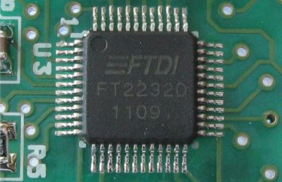
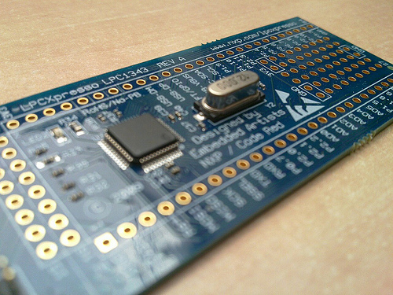
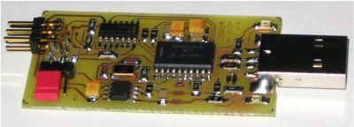
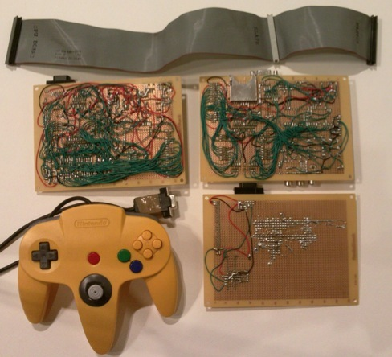
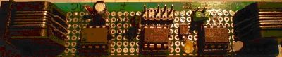
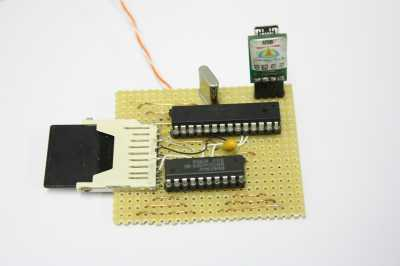
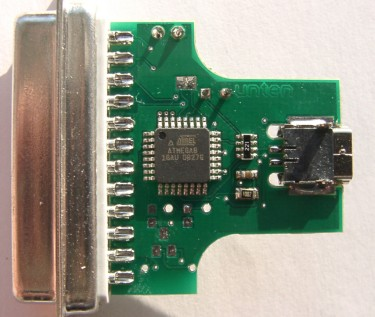

A weblog focused on interesting circuits, ideas, schematics and other information about microelectronics and microcontrollers.
E-books
Disclaimer
Because I have not tested all electronic circuits mentioned on this pages, I cannot attest to their accuracy; therefore, I do not provide a warranty of any kind and cannot be held responsible in any manner.
ftisp: USB-to-ISP Programmer
27. June 2010 - 12:49 — adminFtisp is a command-line utility that allows program AVR processors via an USB chip FT2232 or FT232R.
Ftisp uses the fast synchronous bit-bang features of this chips.

A "Logic Probe - Next Generation"
27. June 2010 - 12:30 — adminAn older article, but a good idea... Logic probe on steroids.
RBox: A DIY 32-bit game console
26. June 2010 - 13:50 — adminThe RBox is a game console that is simple enough to build on the prototype area of a LPCXpresso ARM dev kit. You need just a crystal, a few capacitors and resistors. It uses the smallest and cheapest 32 bit CPU to generate 3D graphics and sound.

AVR AttoBASIC - 3x
12. June 2010 - 13:42 — adminThree circuits with AVRs, implementing a simple BASIC interpreter.
USBDM_JS16 - Freescale USB programmer
12. June 2010 - 13:30 — adminJS16 is a very minimal USBDM version based on MC9S08JS16, that supports HCS12, HCS08 and Coldfire V1 devices. It is easy to construct and may be initially programmed over the USB.

ARM7 game console
28. May 2010 - 18:25 — adminHow to build game console based on ARM7 chip?

Image: Craig J. Bishop
Getting started with Forth on Propeller
27. May 2010 - 18:50 — adminHow to work with FORTH on your Parallax Propeller board?

1-Wire device emulated by AVR
1. May 2010 - 15:46 — adminI bet you know a lot of artickes on "How to connect 1-Wire device to AVR". Here is the problem reversed: How to simulate an 1-Wire device in AVR?

Photo: MyCorp
Emulating a Z80 CP/M computer on ATMega88
30. April 2010 - 11:21 — adminYes, we all know many emulators of old processors "on the chip", but as far as I remember this is the first attempt to emulate a CP/M machine (including Z80) I ever seen.

USB-to-LPT converter
24. April 2010 - 15:37 — adminThere are a lot of devices with LPT (Centronics) interface, but newer computers haven't the LPT interface. Here is a solution...

Photo: Henrik Haftmann